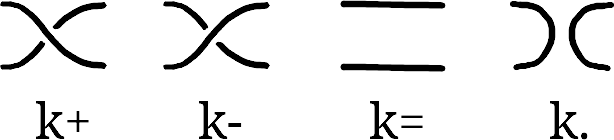
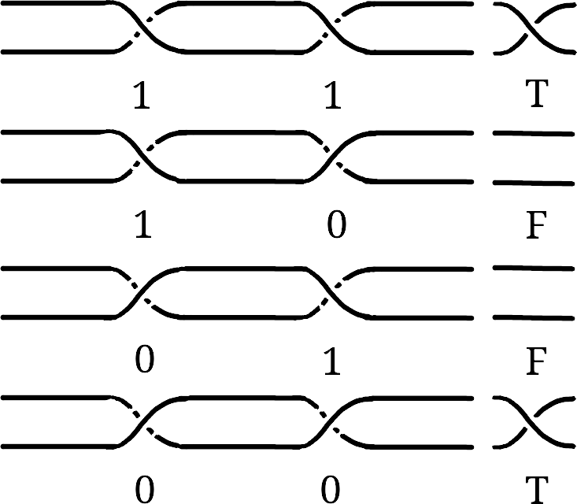
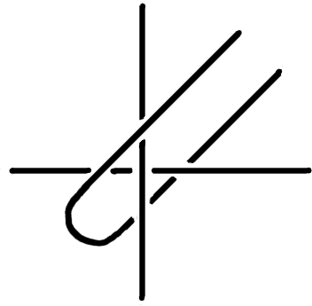
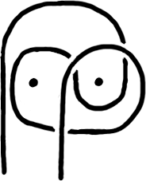
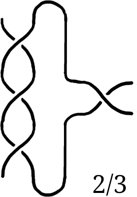
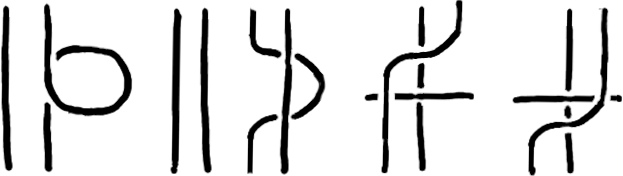
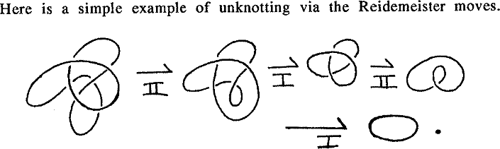
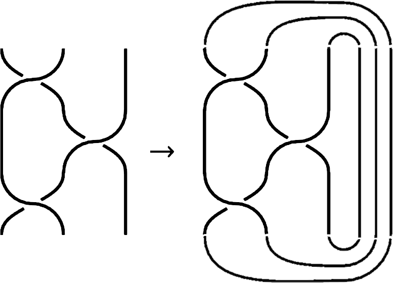
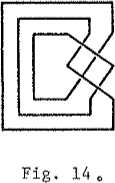

A computer harnessing the natural behavior of knots to solve equations.
This is a collection of interesting aspects of knots that are relevant to computation, it's a work in progress.
Primitives
Given two ropes, there are four primitives that the documentation below will use as building blocks for more complex operations:

k+Rope goes over.k-Rope goes under.k=Rope runs in parallel.k.Rope runs perpendicular.
Logic
If we consider binary logic operations as two ropes running in parallel, the input as knots between them, the evaluation as the tightening of the ropes and the result whether the ropes are released or tangled. We can encode a 1 with k+, a 0 with k-, and if the result is a knotted rope, the result is true, otherwise false.

The truth table reveals that the default interaction between two ropes is XNOR due to every twist being an increment and reversible. For example, k+ can be undone with a k-, and vice versa.

An AND gate can be created by using a third rope or a peg, when both ropes have to run through(k+, k+) the third rope, the C loop is snagged and the result is true, otherwise the loop is released.

It's possible to hang a picture on the wall from a string using two nails in such a way that removing either of the two nails will make both the string and picture fall down. This can also be understood as a kind of AND gate.
Encoding Numbers
By twisting one way or the other, numbers can be encoded in knots:
- Start at Zero, with two parallel ropes, the value is 0.
- Twist once to increment, the value is 1.
- Twist again to increment, the value is 2.
- Twist the other way three times to decrement, the value is -1.
Encoding Fractions

By twisting one way or the other, and changing the lines that are twisted, fractions can be encoded in knots:
- Start at Zero, with two parallel ropes, the value is 0.
- Twist the lines 3 times, the value is 3.
- Rotate 90° clockwise to perform the -1/x operation, the value is -1/3.
- Perform 1 twist(-1/3 + 1), the value is 2/3.
Reidemeister Moves
Reidemeister's Theorem states that two knot diagrams represent the same knot if and only if they can be transformed into each other using a finite sequence of these three moves:

- Twist and untwist in either direction.
- Move one loop completely over another.
- Slide a strand entirely over or under a crossing.

Alexander's theorem states that every knot or link can be represented as a closed braid.

